Soru 1Cevap: A
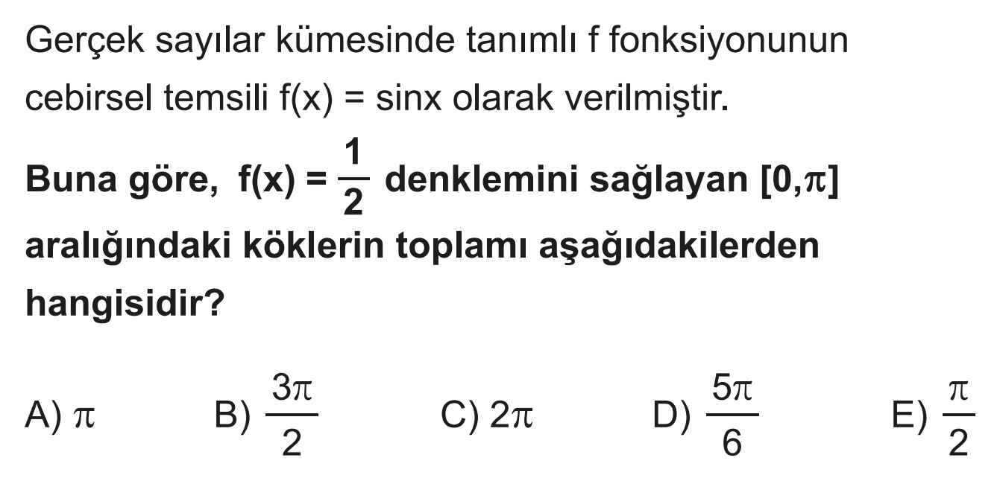
Çözüm
- $\sin x = \frac12$ → $x = \frac{\pi}{6}$ veya $x = \pi - \frac{\pi}{6} = \frac{5\pi}{6}$.
- İkisi de $[0,\pi]$ aralığındadır.
- Toplam $\frac{\pi}{6} + \frac{5\pi}{6} = \pi$.
Cevap: A
Soru 2Cevap: C
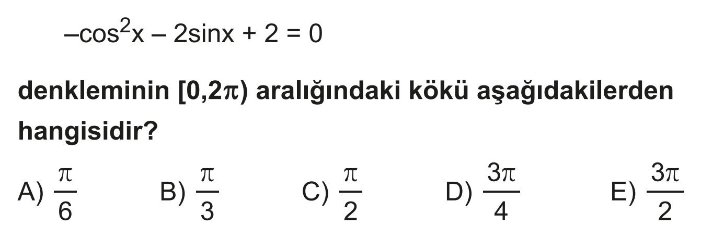
Çözüm
- $\cos^2x = 1 - \sin^2x$ yazılır: $-1 + \sin^2x - 2\sin x + 2 = 0$.
- $\sin^2x - 2\sin x + 1 = (\sin x - 1)^2 = 0$ → $\sin x = 1$.
- $[0,2\pi)$'de $x = \frac{\pi}{2}$.
Cevap: C
Soru 3Cevap: B
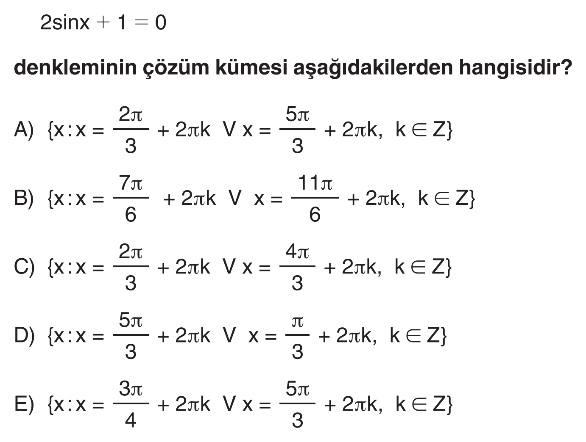
Çözüm
- $\sin x = -\frac12$.
- Sinüs III. ve IV. bölgede negatif: $x = \frac{7\pi}{6}$ ya da $x = \frac{11\pi}{6}$.
- Periyot $2\pi$: $\{x: x = \frac{7\pi}{6}+2k\pi \vee x = \frac{11\pi}{6}+2k\pi\}$.
Cevap: B
Soru 4Cevap: E
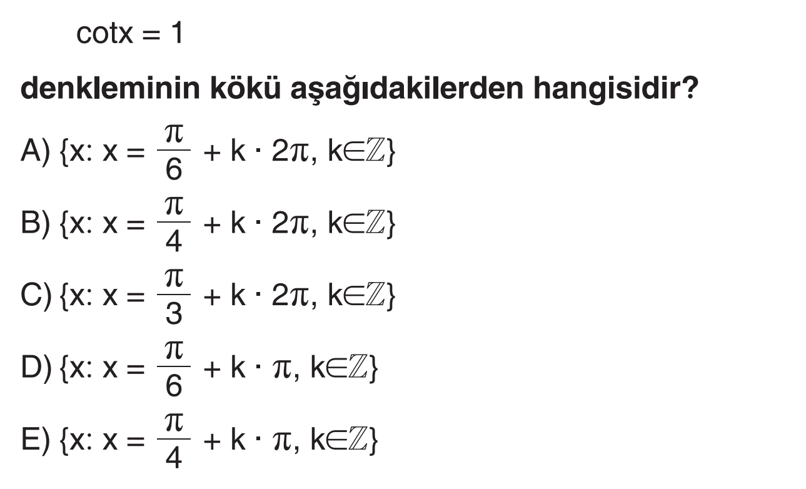
Çözüm
- $\cot\frac{\pi}{4} = 1$.
- Kotanjantın periyodu $\pi$.
- $x = \frac{\pi}{4} + k\pi$, $k\in\mathbb{Z}$.
Cevap: E
Soru 5Cevap: D
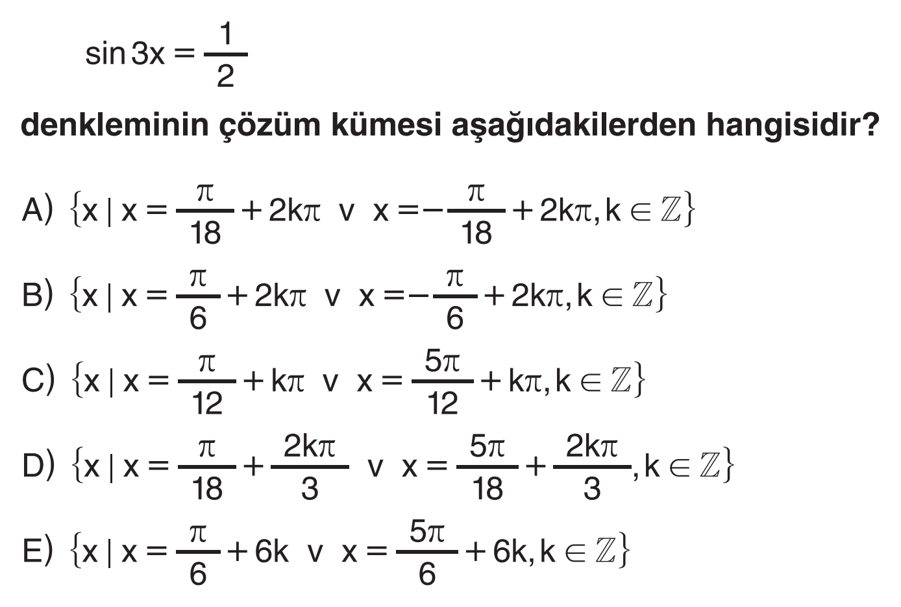
Çözüm
- $3x = \frac{\pi}{6} + 2k\pi$ veya $3x = \frac{5\pi}{6} + 2k\pi$.
- 3'e bölünür: $x = \frac{\pi}{18} + \frac{2k\pi}{3}$
- veya $x = \frac{5\pi}{18} + \frac{2k\pi}{3}$.
Cevap: D
Soru 6Cevap: B
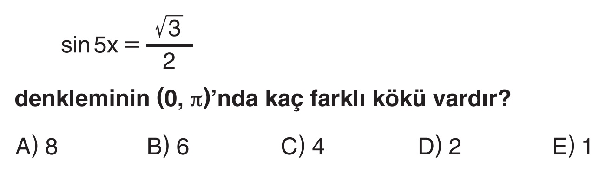
Çözüm
- $x\in(0,\pi)$ ise $5x\in(0,5\pi)$.
- $\sin u = \frac{\sqrt3}{2}$: $u = \frac{\pi}{3}, \frac{2\pi}{3}, \frac{7\pi}{3}, \frac{8\pi}{3}, \frac{13\pi}{3}, \frac{14\pi}{3}$.
- 6 farklı kök.
Cevap: B
Soru 7Cevap: E
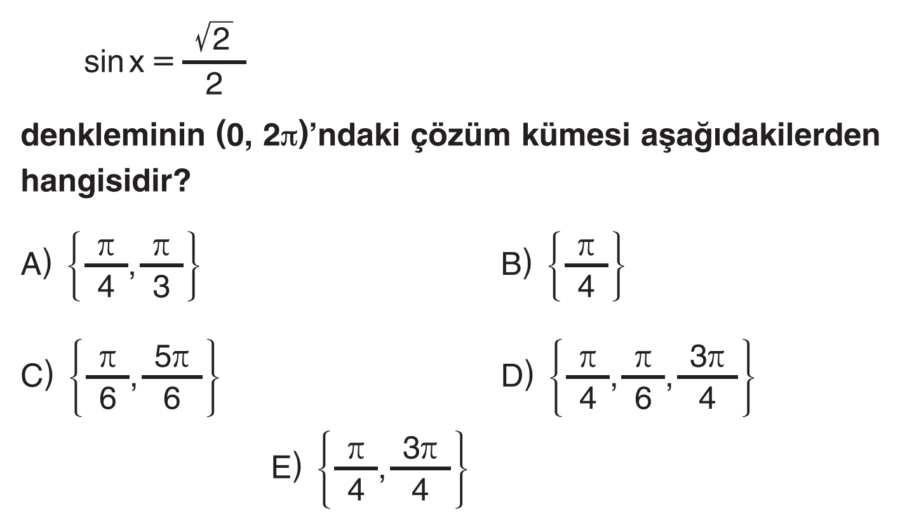
Çözüm
- $\sin x = \frac{\sqrt2}{2}$ → I. bölgede $x = \frac{\pi}{4}$.
- II. bölgede $x = \pi - \frac{\pi}{4} = \frac{3\pi}{4}$.
- $\left\{\frac{\pi}{4}, \frac{3\pi}{4}\right\}$.
Cevap: E
Soru 8Cevap: C
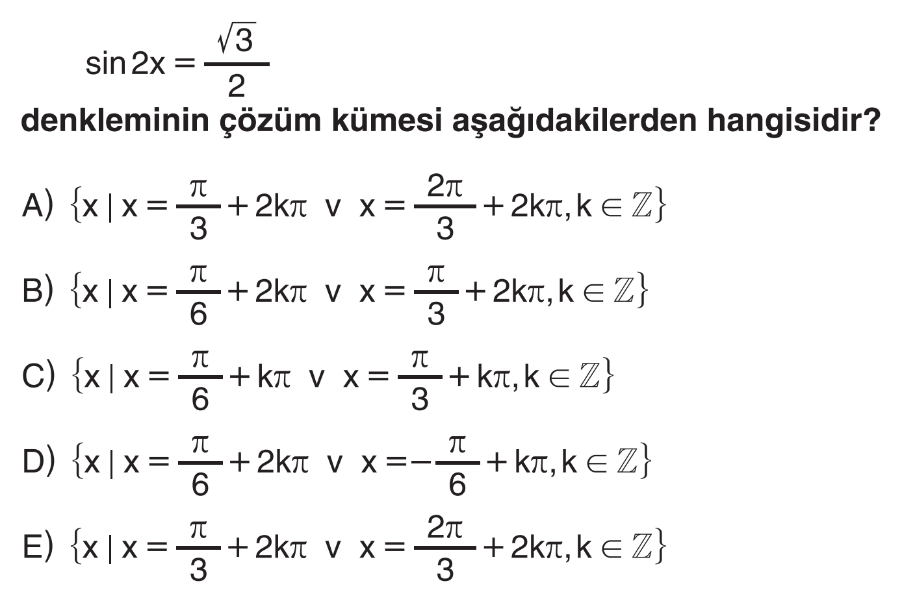
Çözüm
- $2x = \frac{\pi}{3} + 2k\pi$ veya $2x = \frac{2\pi}{3} + 2k\pi$.
- 2'ye bölünür.
- $x = \frac{\pi}{6} + k\pi$ veya $x = \frac{\pi}{3} + k\pi$.
Cevap: C
Soru 9Cevap: C
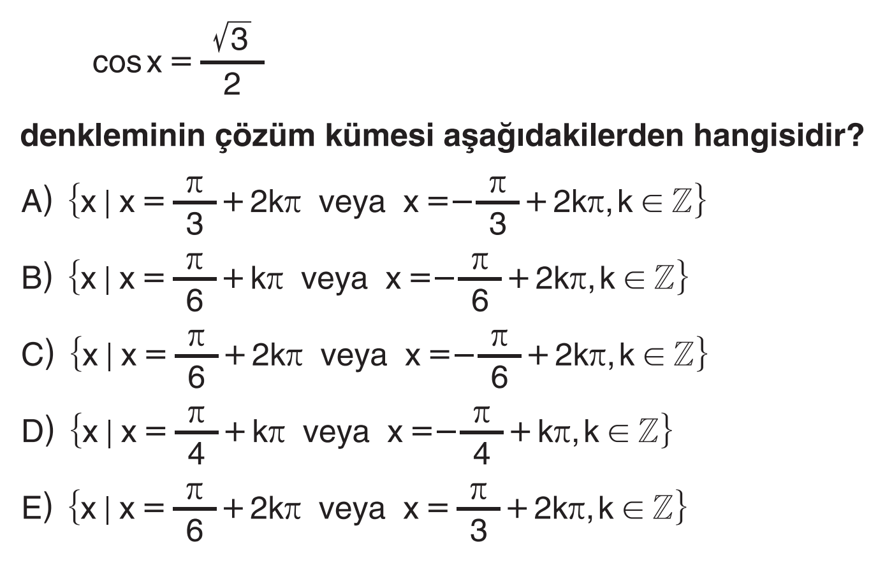
Çözüm
- $\cos\frac{\pi}{6} = \frac{\sqrt3}{2}$.
- Kosinüs çift: $\cos x = \cos\alpha$ ⇔ $x = \pm\alpha + 2k\pi$.
- $x = \frac{\pi}{6} + 2k\pi$ veya $x = -\frac{\pi}{6} + 2k\pi$.
Cevap: C
Soru 10Cevap: B
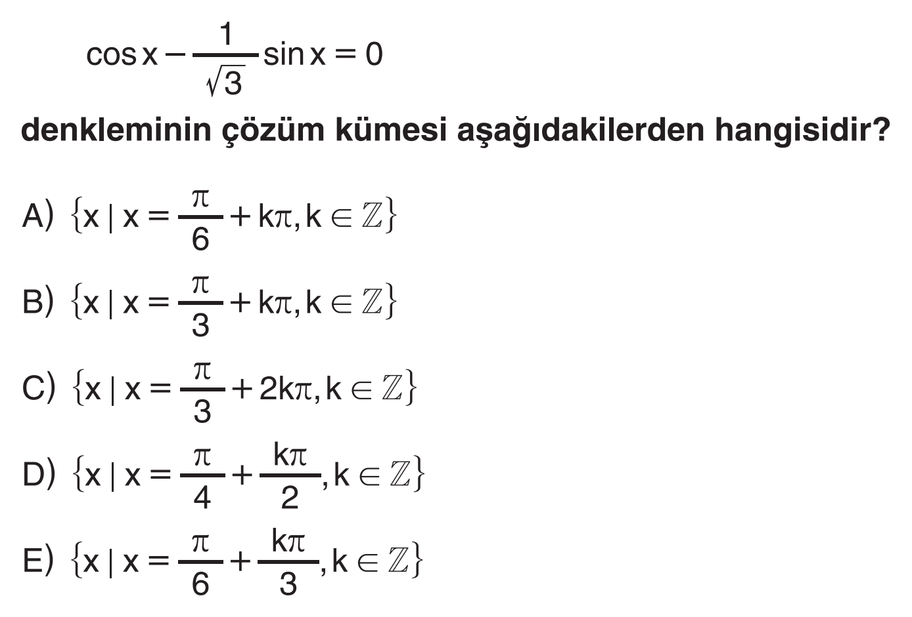
Çözüm
- $\cos x = \frac{1}{\sqrt3}\sin x$ → ($\cos x\ne0$) $\tan x = \sqrt3$.
- $\tan\frac{\pi}{3} = \sqrt3$; periyot $\pi$.
- $x = \frac{\pi}{3} + k\pi$.
Cevap: B
Soru 11Cevap: D
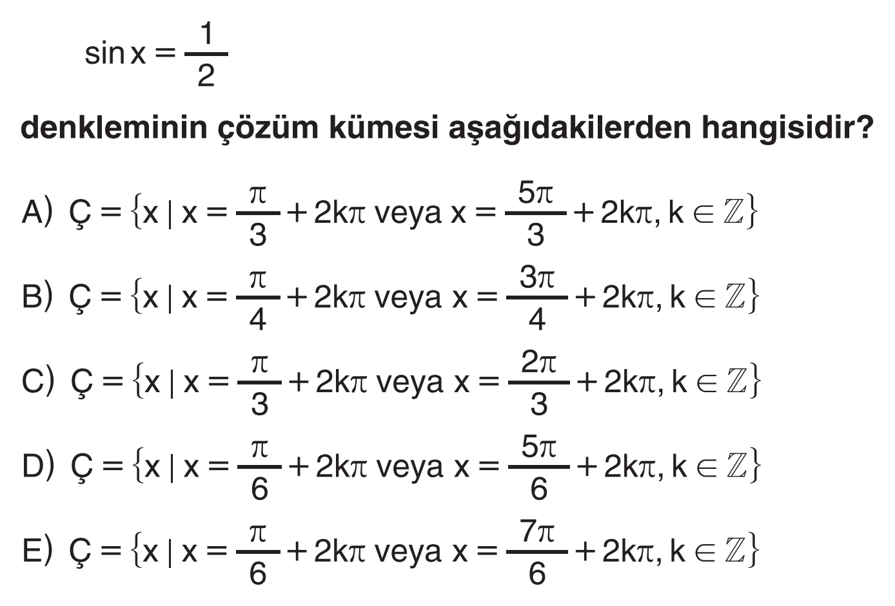
Çözüm
- $\sin\frac{\pi}{6} = \frac12$.
- Bütünleri de aynı sinüse sahiptir: $\pi - \frac{\pi}{6} = \frac{5\pi}{6}$.
- $x = \frac{\pi}{6} + 2k\pi$ veya $x = \frac{5\pi}{6} + 2k\pi$.
Cevap: D
Soru 12Cevap: C
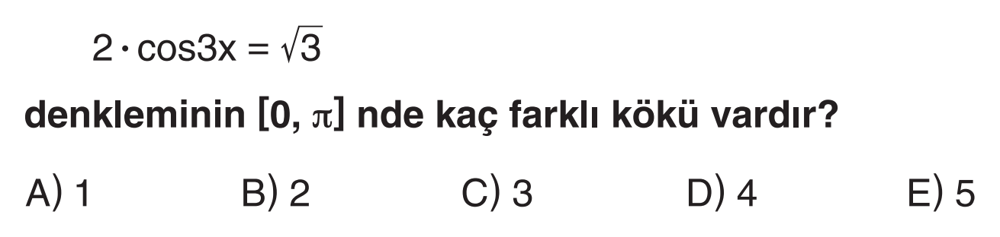
Çözüm
- $\cos3x = \frac{\sqrt3}{2}$, $x\in[0,\pi]$ ise $3x\in[0,3\pi]$.
- $3x = \frac{\pi}{6}, \frac{11\pi}{6}, \frac{13\pi}{6}$.
- 3 farklı kök.
Cevap: C
Soru 13Cevap: B
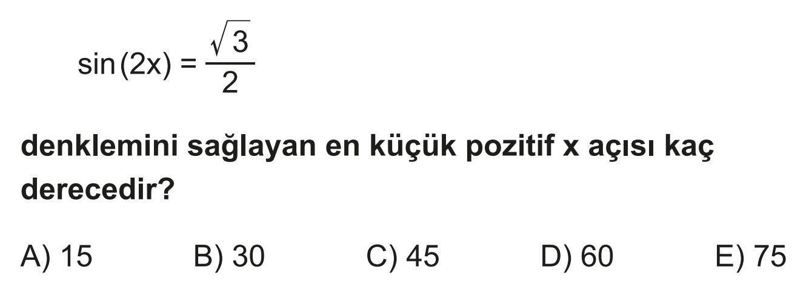
Çözüm
- $\sin2x = \frac{\sqrt3}{2}$ → en küçük pozitif $2x = 60^\circ$.
- (Sonraki $2x = 120^\circ$ daha büyük $x$ verir.)
- $x = 30^\circ$.
Cevap: B
Soru 14Cevap: B
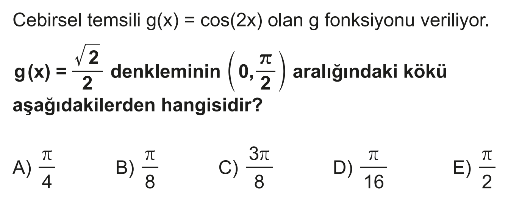
Çözüm
- $x\in\left(0,\frac{\pi}{2}\right)$ ise $2x\in(0,\pi)$.
- $\cos2x = \frac{\sqrt2}{2}$ → $2x = \frac{\pi}{4}$.
- $x = \frac{\pi}{8}$.
Cevap: B
Soru 15Cevap: B
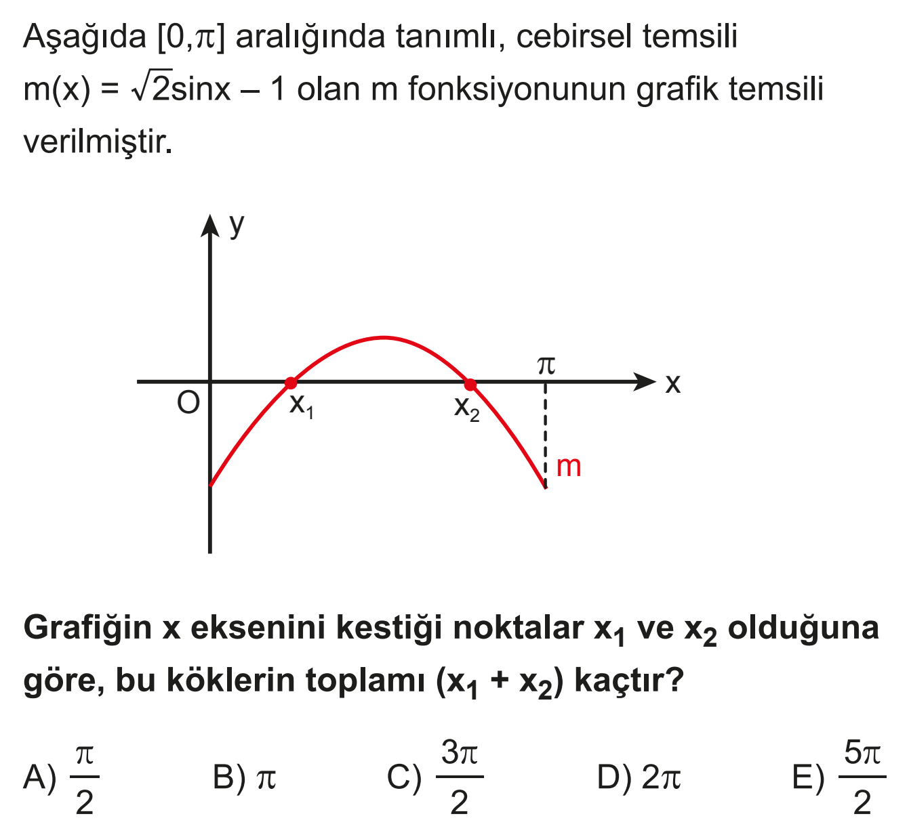
Çözüm
- $\sqrt2\sin x - 1 = 0$ → $\sin x = \frac{\sqrt2}{2}$.
- $[0,\pi]$'de $x_1 = \frac{\pi}{4}$, $x_2 = \frac{3\pi}{4}$.
- $x_1 + x_2 = \pi$ (grafik $x = \frac{\pi}{2}$'ye göre simetrik).
Cevap: B
Soru 16Cevap: D
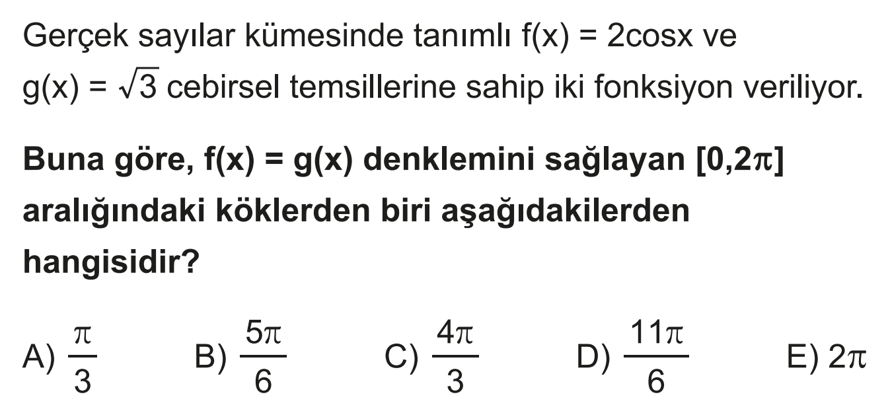
Çözüm
- $2\cos x = \sqrt3$ → $\cos x = \frac{\sqrt3}{2}$.
- $[0,2\pi]$'de $x = \frac{\pi}{6}$ ve $x = 2\pi - \frac{\pi}{6} = \frac{11\pi}{6}$.
- Seçeneklerde $\frac{11\pi}{6}$ var.
Cevap: D
Soru 17Cevap: C
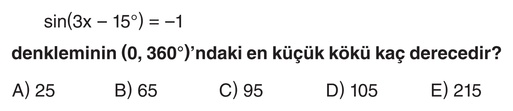
Çözüm
- $\sin u = -1$ ⇔ $u = 270^\circ + k\cdot360^\circ$.
- $3x - 15^\circ = 270^\circ + k\cdot360^\circ$ → $x = 95^\circ + k\cdot120^\circ$.
- $(0,360^\circ)$'de en küçük kök $95^\circ$.
Cevap: C
Soru 18Cevap: D
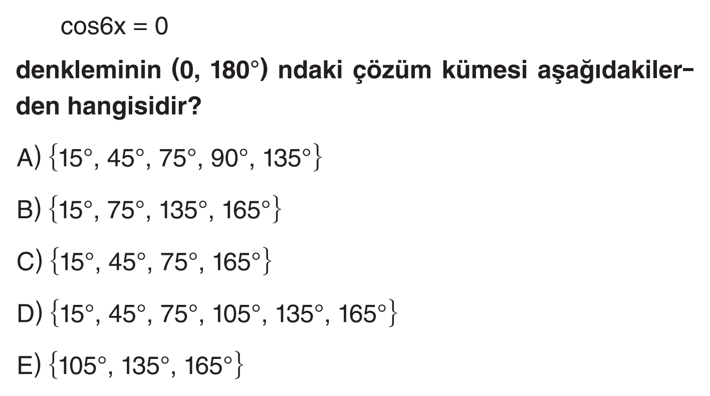
Çözüm
- $\cos u = 0$ ⇔ $u = 90^\circ + k\cdot180^\circ$.
- $6x = 90^\circ + k\cdot180^\circ$ → $x = 15^\circ + k\cdot30^\circ$.
- $(0,180^\circ)$: $15^\circ, 45^\circ, 75^\circ, 105^\circ, 135^\circ, 165^\circ$.
Cevap: D
Soru 19Cevap: A
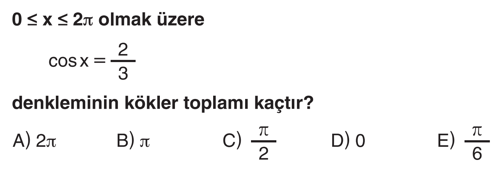
Çözüm
- $\cos x = \frac23 > 0$ → kökler I. ve IV. bölgede: $x_1 = \alpha$, $x_2 = 2\pi - \alpha$.
- (Kosinüs çift: $\cos(2\pi - \alpha) = \cos\alpha$.)
- Toplam $\alpha + 2\pi - \alpha = 2\pi$.
Cevap: A
Soru 20Cevap: C
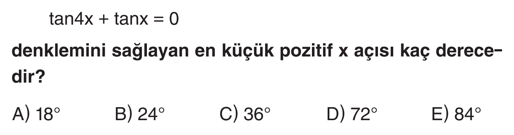
Çözüm
- $\tan4x = -\tan x = \tan(-x)$.
- $4x = -x + k\cdot180^\circ$ → $x = k\cdot36^\circ$.
- En küçük pozitif $x = 36^\circ$.
Cevap: C
Soru 21Cevap: D
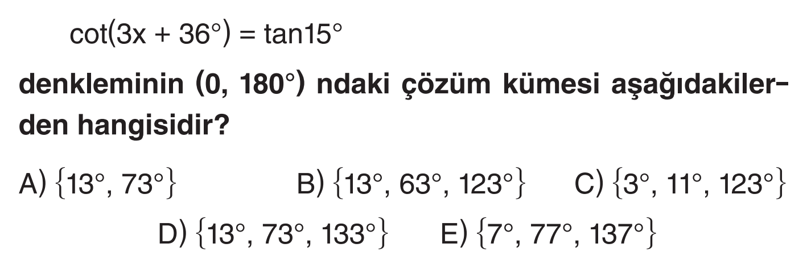
Çözüm
- $\tan15^\circ = \cot75^\circ$ → $\cot(3x + 36^\circ) = \cot75^\circ$.
- $3x + 36^\circ = 75^\circ + k\cdot180^\circ$ → $x = 13^\circ + k\cdot60^\circ$.
- $(0,180^\circ)$: $\{13^\circ, 73^\circ, 133^\circ\}$.
Cevap: D
Soru 22Cevap: E
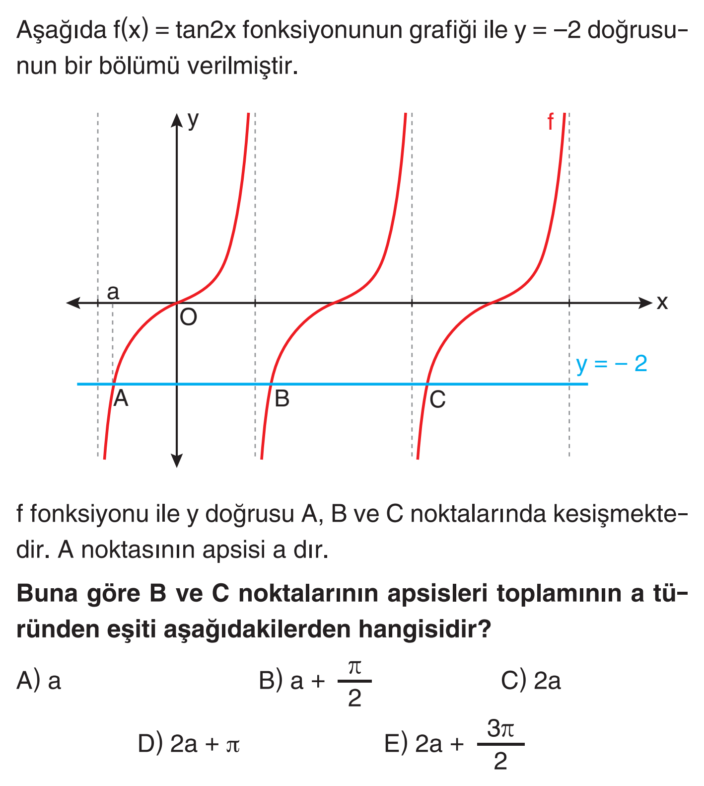
Çözüm
- $\tan2x$'in periyodu $\frac{\pi}{2}$.
- Ardışık kesim noktaları periyot kadar arayla: $B = a + \frac{\pi}{2}$, $C = a + \pi$.
- $B + C = 2a + \frac{3\pi}{2}$.
Cevap: E
Soru 23Cevap: B
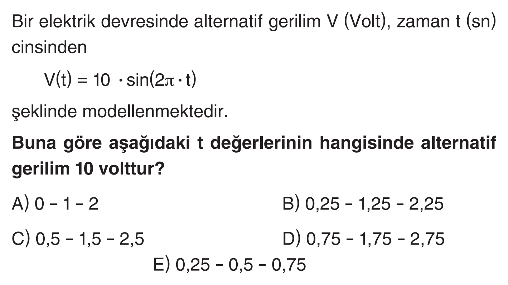
Çözüm
- $10\sin(2\pi t) = 10$ → $\sin(2\pi t) = 1$.
- $2\pi t = \frac{\pi}{2} + 2k\pi$ → $t = \frac14 + k$.
- $t = 0{,}25;\ 1{,}25;\ 2{,}25$ → B.
Cevap: B
Soru 24Cevap: B
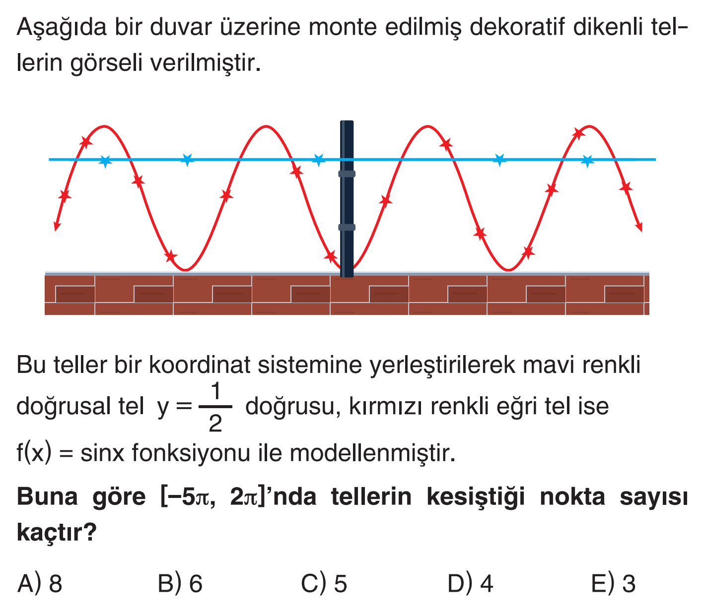
Çözüm
- Kesişim: $\sin x = \frac12$ → $x = \frac{\pi}{6} + 2k\pi$ veya $x = \frac{5\pi}{6} + 2k\pi$.
- $[-5\pi, 2\pi]$'de: $\frac{\pi}{6}, -\frac{11\pi}{6}, -\frac{23\pi}{6}$ ve $\frac{5\pi}{6}, -\frac{7\pi}{6}, -\frac{19\pi}{6}$.
- Toplam 6 kesişim noktası.
Cevap: B